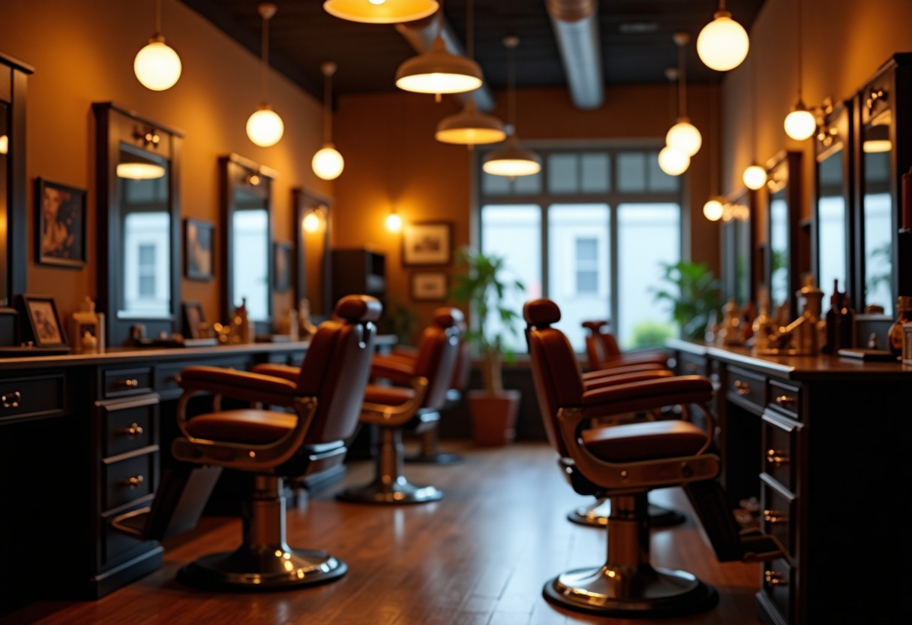
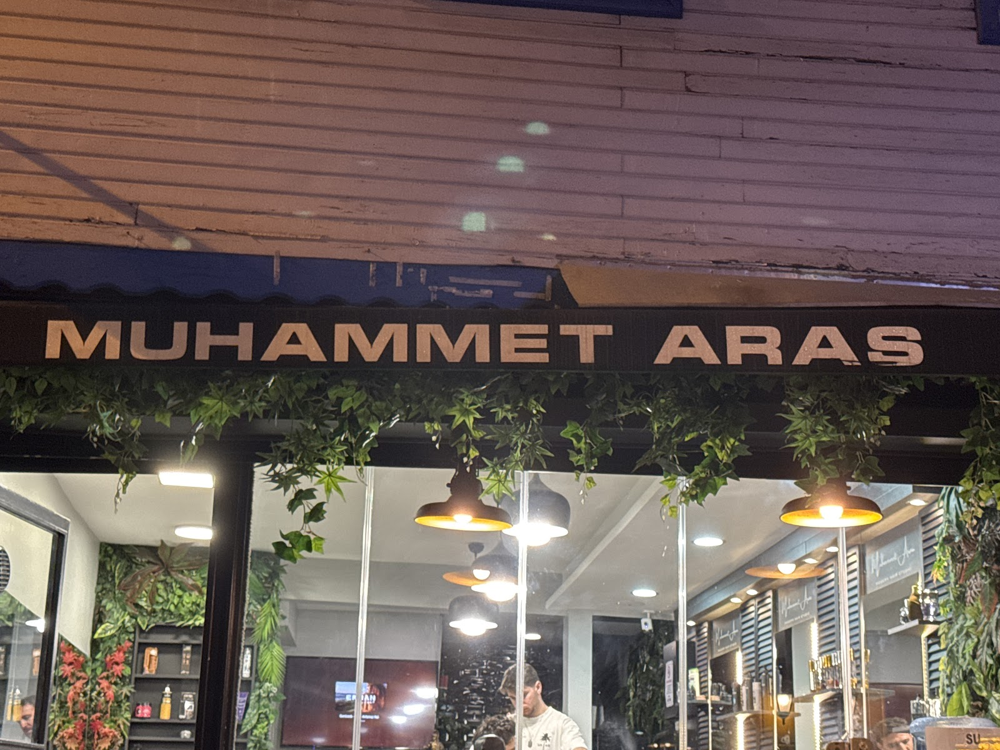
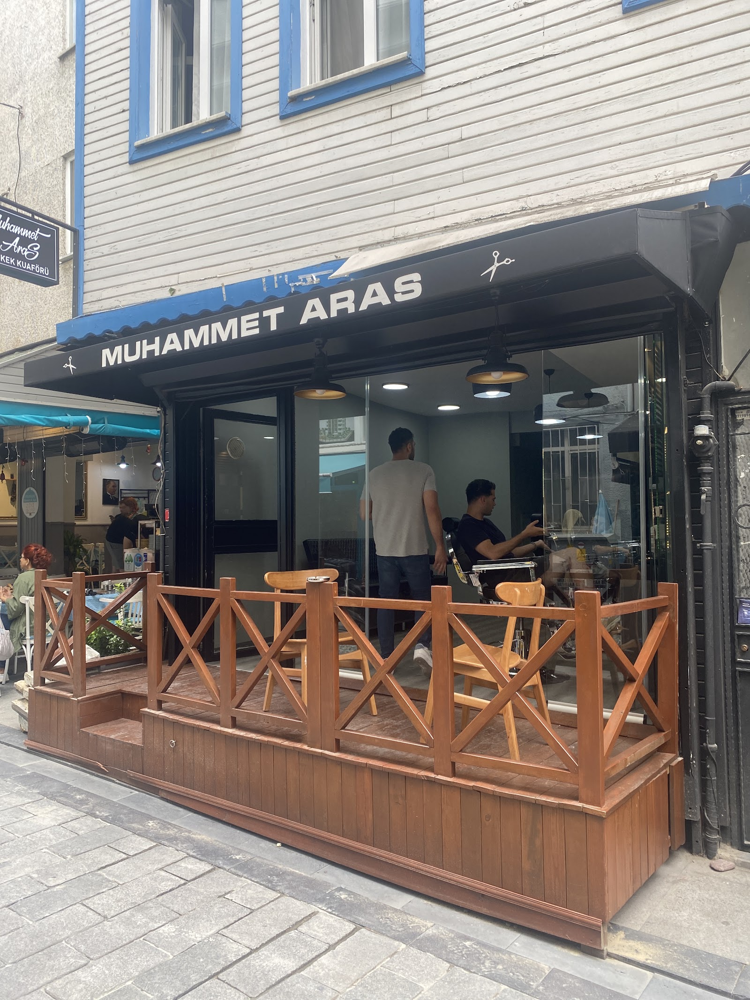
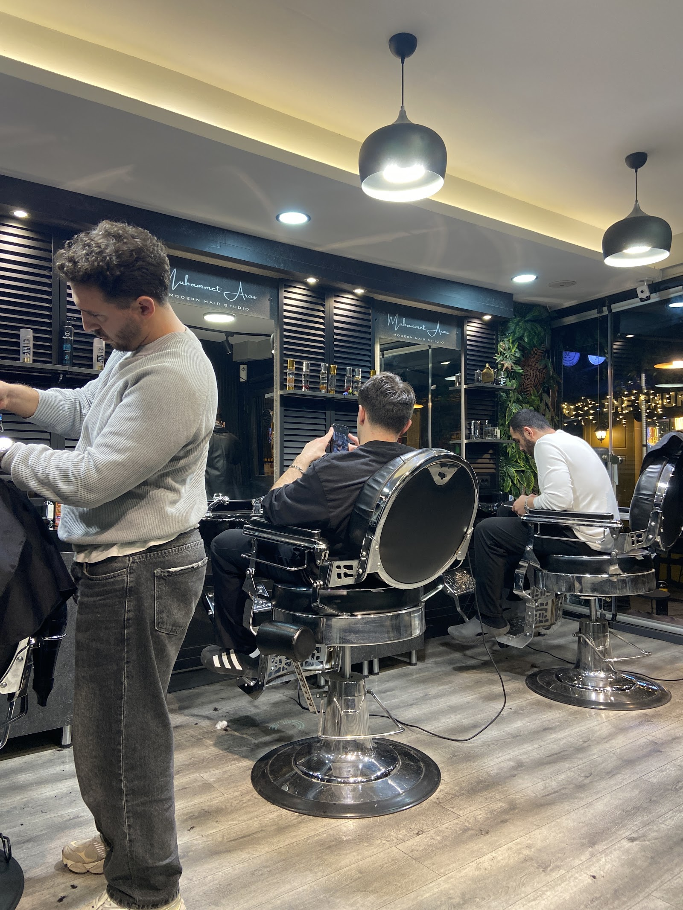
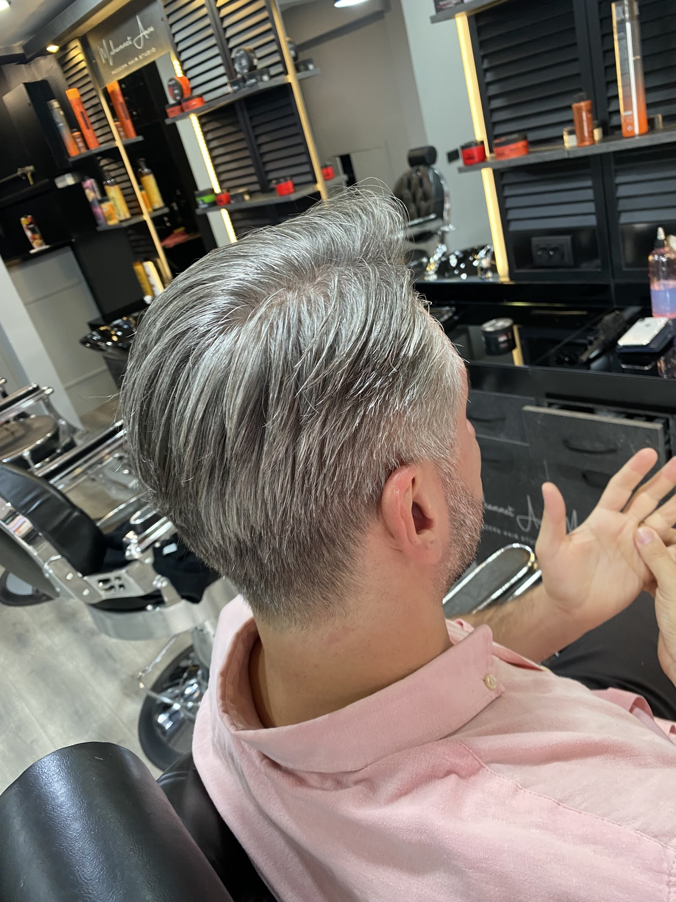

YÜZ ŞEKLİNE GÖRE MODEL
Size hangi saç modeli yakışır?
Yüz şeklinizi seçin; size yakışan modelleri fotoğraflarıyla görün, beğendiğinizi randevunuza ekleyin.

Beşiktaş · İstanbul · Berber Dükkanı
Sinanpaşa'daki dükkanımızda her kesime özen, her müşteriye içtenlikle yaklaşırız. Temiz bir ortamda, rahat bir sohbetle kendinize zaman ayırın.

Yüz şeklinizi seçin; size yakışan modelleri fotoğraflarıyla görün, beğendiğinizi randevunuza ekleyin.
Hizmeti, günü ve boş saati seçin. Randevunuz WhatsApp'tan onaylanır, takviminize hatırlatma düşer.
Dolu saatler üstü çizili görünür.
5 tıraşa 1 tıraş bizden. Kart telefonunuzda, kaybolmaz.
Yayında her randevu sonrası damga otomatik eklenir.
Yüz hatlarınıza ve tarzınıza uygun, özenle uygulanan erkek saç kesimi.
Sakalınızın formunu düzenli ve temiz çizgilerle şekillendiriyoruz.
Kesimin yanında saç ve sakalınızın bakımını tek seferde tamamlıyoruz.
Özel gününüz için sakin bir ortamda, detaylara önem verilen hazırlık.
Küçük müşterilerimiz için sabırlı ve rahat bir tıraş deneyimi.
Kesim sonrası saçınızı günlük kullanıma uygun biçimde şekillendiriyoruz.




Müşterilerimiz kesimlerdeki titizliği ve temiz sonucu sık sık dile getiriyor.
Dükkanın temizliği ilk dikkati çeken şeylerden biri; kendinizi rahat hissedersiniz.
Ekibin samimiyeti sayesinde müşterilerimiz kendilerini evlerinde gibi hissettiklerini söylüyor.
Sohbetimiz de işimiz kadar içten; amacımız sizin sonuçtan memnun ayrılmanız.
📍 Sinanpaşa, Şair Veysi Sk. 18/1, 34353 Beşiktaş/İstanbul
🕑 Pzt–Per 10:00–21:00 · Cum 10:00–22:00 · Cmt 09:00–22:00 · Paz kapalı